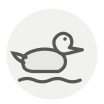

Mallard ◆
Canard colvert
| Latin name | Anas platyrhynchos |
|---|---|
| Family | Meat & poultry |
| Origin | Wetlands of Europe and North America |
| Season | September – January |
| Flavour | Meaty · Earthy · Umami |
| Typical price | 15–30 €/pièce |
What it is
Every farmed duck except the Muscovy descends from this bird, yet the wild one carries almost none of the fat domestication built in. A shot mallard has been flying and eating whatever it found, so no two taste alike — birds off grain stubble are noticeably sweeter than birds off open water.
In the kitchen
Keep the breasts only and take them off at 52 °C in the centre — there is no fat layer to buy you time, and a minute past rare it eats like dry liver. The legs are sinewy and belong in a confit or a pie; the carcass goes to stock.
Goes with
Turnip Juniper berry Blackcurrant Cabbage Red wine vinegar Celeriac Quince Black pepper
Same species
Pekin duck Century egg (pidan) Duck heart Duck confit Stuffed duck neck Duck
In season alongside
Goose Maitake Porcini Bay bolete Woodcock Snipe
Something wrong here, or missing? Tell us